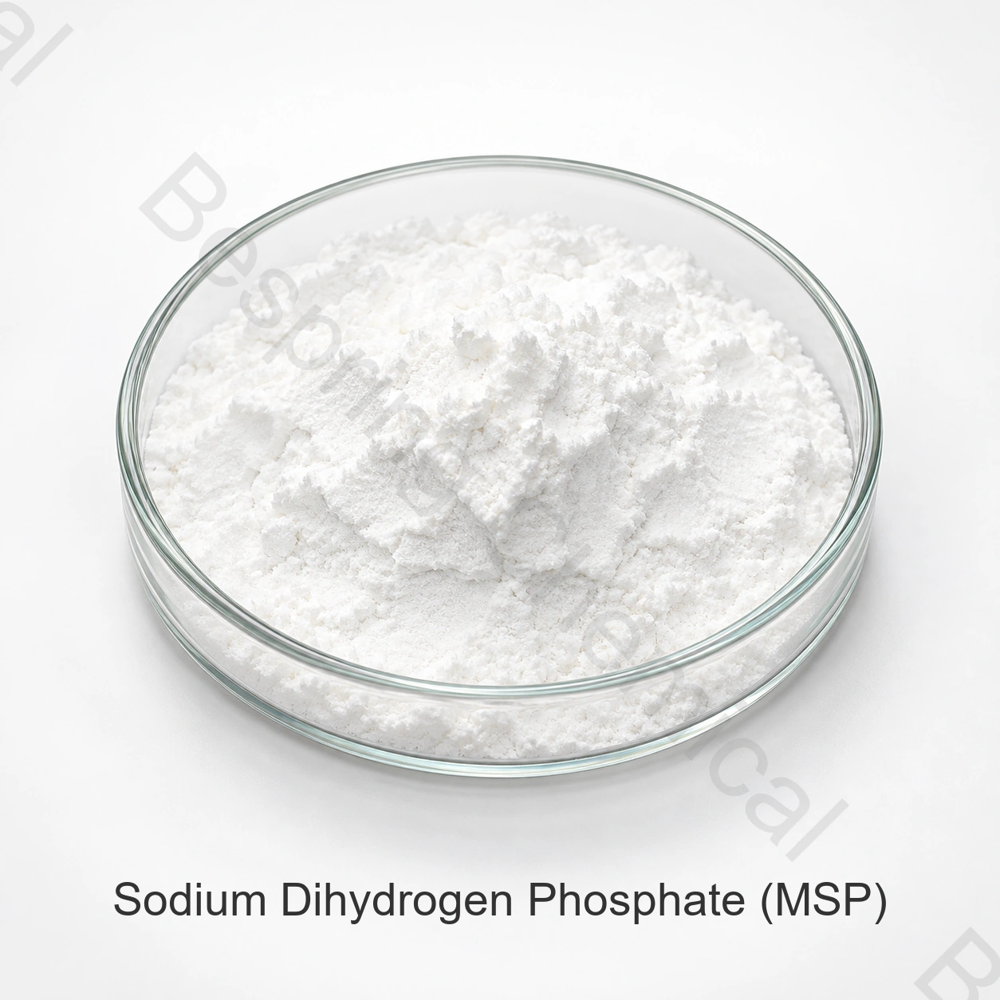

酸味の規則および緩衝
MSPは、ナトリウムオリン酸塩シリーズの酸性メンバーであり、互換性のある製剤におけるpH制御に貢献することができます。
食品等級の隣酸塩・ナトリウムのorthophosphate · INS 339 (i)
ナトリウムのジヒドロゲン隣酸塩は酸性調節、乳化塩機能および水管理のための選ばれた食糧システムで使用される酸性ナトリウムのorthophosphateです。

製品イメージ・注文時にグレード・パッケージの確認
製品概要
参照の試金98.0–103.0%
標準的なパッキング25キロの袋
容器のローディング24 MT / 20' FCL
資格についてCOAおよび要求の証明書
食品等級ナトリウムのdihydrogenの隣酸塩(MSP)、別名monodium隣酸塩はINS 339 (i)です。CAS 7558-80-7は無水NaHを識別します2PO4; 給水された形態は別に指定されなければなりません。
商用仕様および独立した添加物識別参照は、異なる目的のために役立ちます。 法的使用、投与量および文書は、目的地の市場と正確な食品用途のために確認する必要があります。
機能的役割
性能は等級、適量、公式、プロセス条件および適当な食糧規則によって決まります。
MSPは、ナトリウムオリン酸塩シリーズの酸性メンバーであり、互換性のある製剤におけるpH制御に貢献することができます。
互換性のあるチーズ、肉、飲料、ゼリーの配合において、乳化塩および水管理機能を評価します。
食品用途スクリーニング
これらは、ユニバーサル使用承認または保証された結果ではなく、アプリケーションスクリーニング領域です。
酸味、乳化塩バランス、溶融、完全チーズ配合の質感を評価します。
実質の蛋白質および塩の条件の下で水保持、pHの応答、結合および収穫を選別して下さい。
ミネラル、タンパク質、その他の酸とpH、味、明快さと互換性を評価します。
意図したレシピで酸味規制、ゲルの動作、棚の安定性を評価します。
粉末原料システム内の水分補給フォーム、フロー、溶解、湿気の取り込みを確認します。
MSP単独で比較し、ターゲットpHと機能性能のための許可されたリン酸塩の組み合わせで。
商用仕様
これらの商取引用参考限度値は、ロットごとのCOA結果や規制要件とは別です。署名済みの仕様書で、水和形態、測定方法、受入基準を合意してください。
スワイプするか、キーボードを使ってすべての列をご覧ください
| 試験項目 | ユニット | 仕様書 |
|---|---|---|
| ナトリウムのdihydrogenの隣酸塩の内容 | % | 98.0–103.0 |
| 不溶性物質 | % | ≤0.2 |
| ヒ素（As） | % | ≤0.0003 |
| フッ化物(F) | % | ≤0.003 |
| 重金属（Pb換算） | % | ≤0.001 |
| 鉛（Pb） | % | ≤0.0004 |
| 乾燥の損失 | — | フォーム依存関係; 下の行を参照してください。 |
| ダイハイドレートの参照 — 合意書 | % | 10.0–15.0 |
| アナヒドロス | % | ≤2.0 |
| 外観 | — | 無色の水晶か白い結晶の粉 |
指定のノート: NaH2PO4は無水、単水酸塩ではないです;NaH2PO4・2H2Oは水和物です。10〜15%の損失乾燥の参照は水和物と分類されますが、正しい水和形態か試験方法を確立しません。水和物、方式、方法および限界を定義する署名された指定なしで水和物の特定か、または受け入れる範囲を使用して下さい。
資格サポート
現在の仕様/TDS、SDS、試験方法および代表的またはバッチCOAを要求して下さい。
該当するHACCP、コーシャ、ハラール、ISO文書の要求、製品、サイト、スコープ、有効性の確認
レビュー FAO/WHO JECFAナトリウムのジヒドロゲンのリン酸塩の記録 アイデンティティの文脈のため。
貯蔵および処理
バイヤーの質問
ナトリウムのジヒドロゲン隣酸塩は酸性調節、乳化塩機能および水管理のための選ばれた食糧システムで使用される酸性ナトリウムのorthophosphateです。厳密な適用のための法的使用そして性能を確かめて下さい。
商用参照仕様は、98.0〜103.0%をリストします。現在の署名仕様と、COAのバッチを受諾するために使用します。
参考条件は1袋25 kg、20フィートコンテナ当たり24 MT、最小注文量500 kgです。
要求の指定/TDS、SDS、COAおよび適当なHACCP、コーシャ、ハラールおよびISO文書は厳密な源のために作ります。
等級か水和の形態、適用、指定、量、パッキング、宛先、文書および配達日付を提供して下さい。
関連する食品リン酸塩
この関連食品グレードのリン酸塩のアイデンティティ、仕様、アプリケーション、調達の詳細を確認します。
この関連食品グレードのリン酸塩のアイデンティティ、仕様、アプリケーション、調達の詳細を確認します。
この関連食品グレードのリン酸塩のアイデンティティ、仕様、アプリケーション、調達の詳細を確認します。
仕様に基づく調達
アプリケーション、仕様、数量、梱包、宛先、必要書類を共有します。
あなたの等級および宛先市場を私達に知らせて下さい従って私達はあなたの順序のためにどの文書が利用できるか確認してもいいです。
外部参照は、バッチ証明書または Bespring 製品仕様ではありません。